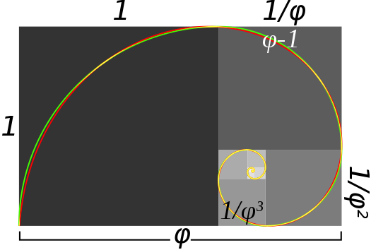
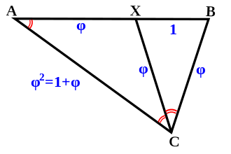
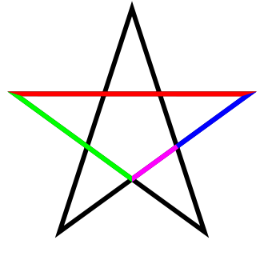
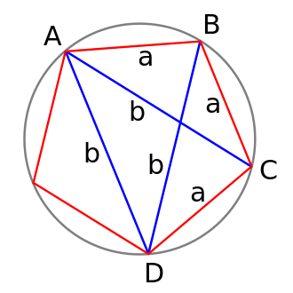

Introduction to Geometry
The number φ turns up frequently in geometry, particularly in figures with pentagonal symmetry. The length of a regular pentagon's diagonal is φ times its side. The vertices of a regular icosahedron are those of three mutually orthogonal golden rectangles.
There is no known general algorithm to arrange a given number of nodes evenly on a sphere, for any of several definitions of even distribution. However, a useful approximation results from dividing the sphere into parallel bands of equal surface area and placing one node in each band at longitudes spaced by a golden section of the circle, i.e. 360°/φ ≅ 222.5°. This method was used to arrange the 1500 mirrors of the student-participatory satellite Starshine-3.

Golden triangle
The golden triangle can be characterized as an isosceles triangle ABC with the property that bisecting the angle C produces a new triangle CXB which is a similar triangle to the original. If angle BCX = α, then XCA = α because of the bisection, and CAB = α because of the similar triangles; ABC = 2α from the original isosceles symmetry, and BXC = 2α by similarity. The angles in a triangle add up to 180°, so 5α = 180, giving α = 36°. So the angles of the golden triangle are thus 36°-72°-72°. The angles of the remaining obtuse isosceles triangle AXC (sometimes called the golden gnomon) are 36°-36°-108°.
Suppose XB has length 1, and we call BC length φ. Because of the isosceles triangles XC=XA and BC=XC, so these are also length φ. Length AC = AB, therefore equals φ + 1. But triangle ABC is similar to triangle CXB, so AC/BC = BC/BX, AC/φ = φ/1, and so AC also equals φ2. Thus φ2 = φ + 1, confirming that φ is indeed the golden ratio. Similarly, the ratio of the area of the larger triangle AXC to the smaller CXB is equal to φ, while the inverse ratio is φ − 1.

Pentagram
The golden ratio plays an important role in the geometry of pentagrams. Each intersection of edges sections other edges in the golden ratio. Also, the ratio of the length of the shorter segment to the segment bounded by the two intersecting edges (a side of the pentagon in the pentagram's center) is φ, as the four-color illustration shows.
The pentagram includes ten isosceles triangles: five acute and five obtuse isosceles triangles. In all of them, the ratio of the longer side to the shorter side is φ. The acute triangles are golden triangles. The obtuse isosceles triangles are golden gnomons.

Pentagon
In a regular pentagon the ratio of a diagonal to a side is the golden ratio, while intersecting diagonals section each other in the golden ratio.
